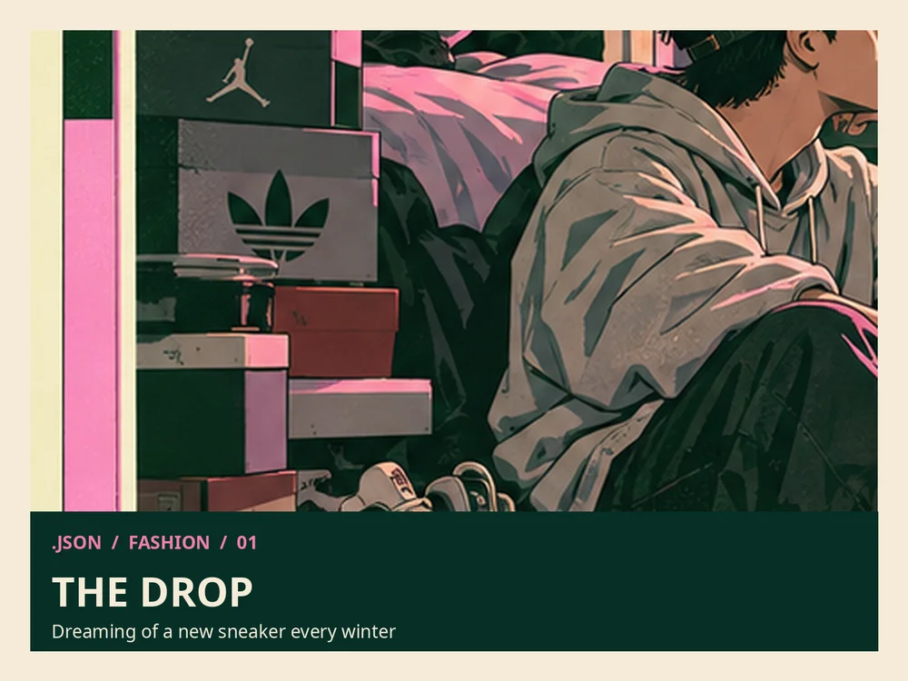

Wardrobe Explorer
Không có style quiz, chẳng có đúng sai. Chỉ có sáu lần thay đổi cách nhìn về một món đồ, từ “new drop” cho đến chiếc áo cũ trong tủ bố.

THE ARCHIVE / VERSION NOTES
Less is more?
This is not a prescription for everyone to dress minimally. The narrator is questioning whether a logo, a trend, or an approved formula still needs to define him.
Be your own label, not a hanger, my man.
OPEN THE EDITOR'S NOTE
The economic discussion about fast fashion remains a personal interpretation. The old jacket and wardrobe art are a visual metaphor, not an archival photograph of an identified item.
LISTEN — ambient preview
Synthetic ambient sound only, not Jason's voice. Narration is still awaiting approval and recording.